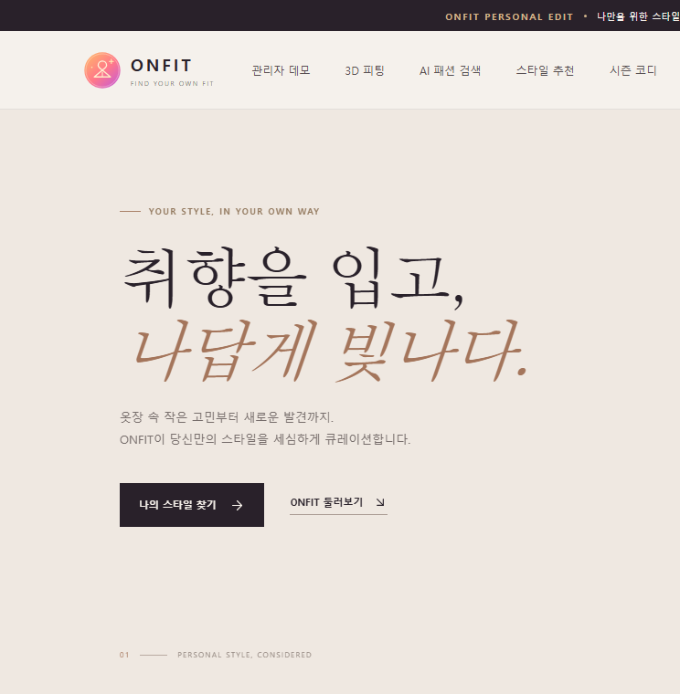
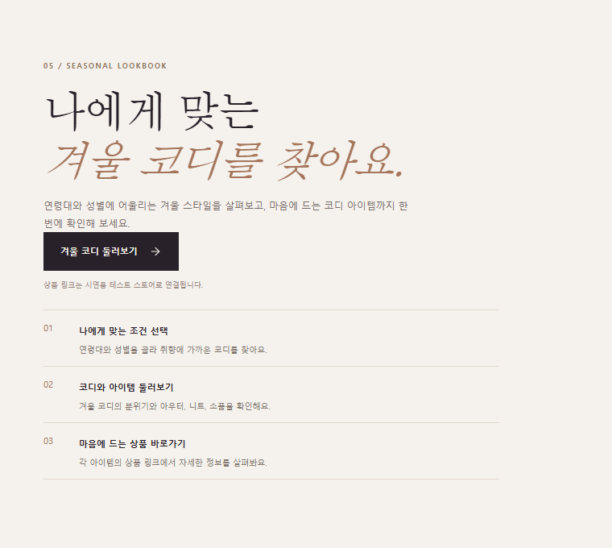
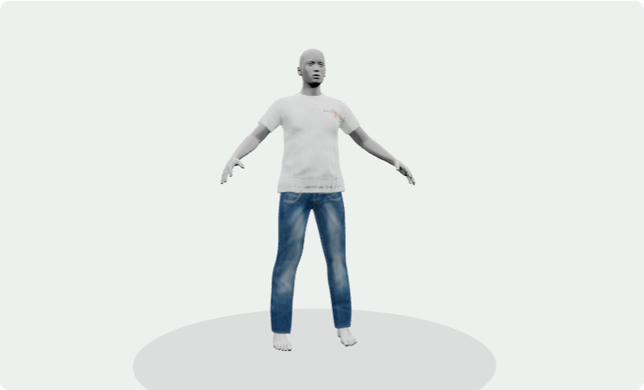
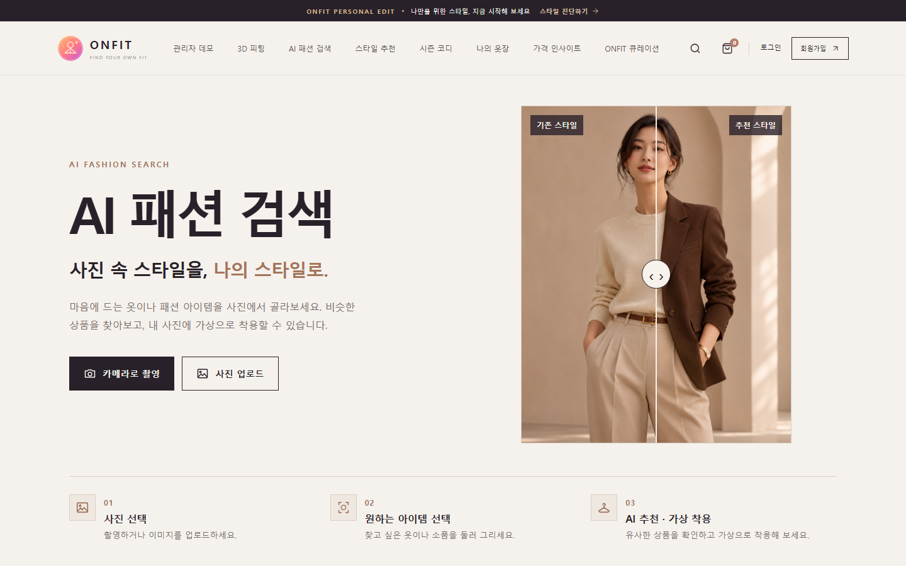

실제 프로젝트 화면01 / Commerce
메인 쇼핑몰
공통 Header/Footer 아래 반응형 상품 탐색, 회원가입·로그인, 스타일 취향 저장을 연결했습니다. 홈 상품과 일반 추천 코디에는 시연용 데이터가 포함됩니다.
ReactFastAPITiDB
하나의 React 화면에서 쇼핑몰·시즌 코디·3D 피팅·AI Fashion을 탐색합니다. 공통 FastAPI는 회원·프로필과 AI 검색을 연결하며, 화면별 시연 데이터와 실제 API 처리 범위는 구분해 소개합니다.
01 / What we built
아래 이미지는 현재 프로젝트의 실제 화면과 랜딩에서 사용하는 예시 이미지입니다. 기능 범위와 시연 데이터를 함께 표기했습니다.

실제 프로젝트 화면01 / Commerce
공통 Header/Footer 아래 반응형 상품 탐색, 회원가입·로그인, 스타일 취향 저장을 연결했습니다. 홈 상품과 일반 추천 코디에는 시연용 데이터가 포함됩니다.

실제 프로젝트 화면02 / Seasonal Curation
연령대·성별에 맞는 겨울 코디를 탐색하고 아우터, 니트, 소품을 살펴봅니다. 찜한 상품은 브라우저의 옷장 화면에서 다시 확인할 수 있습니다.
상품과 가격은 Mock.shop 샘플 카탈로그 기준입니다.

실제 프로젝트 화면03 / Body Preview
체형 프리셋·직접 입력한 치수·확인한 인바디 수치를 3D 마네킹에 반영합니다. 의류와 색상을 바꾸고 모델을 회전해 형태를 확인합니다.
시각적 미리보기이며 실제 사이즈 적합성 판정은 아닙니다.

실제 프로젝트 화면04 / Image Search
사진에서 원하는 의류를 둘러 그리면 Vision이 특징과 검색어를 분석합니다. 무신사 상품 후보를 이미지로 비교해 추천하고, 선택한 상품으로 가상 착용 이미지를 생성합니다.
02 / Architecture & Data Pipeline
AI Fashion은 사용자가 실행한 단계에 따라 분석, 검색, 추천, 이미지 생성을 순서대로 수행합니다. 상품 선택만으로 새 AI 요청을 시작하지 않습니다.
카메라/업로드와 자유형 다각형 좌표
선택 아이템의 속성과 검색어 추출
Playwright로 무신사 후보 수집·필터
선택 영역 crop과 후보 이미지를 비교
선택 상품으로 생성·비교·저장
회원·프로필·인바디 기록은 TiDB 연결을 사용합니다. 시즌 코디는 별도로 Mock.shop 샘플을 조회합니다. AI Fashion 화면은 메인 React 앱에 통합되어 공통 Header/Footer를 공유합니다.
03 / Engineering Notes
기능 소개보다 설계 판단을 보여 주는 세 가지 사례입니다. 해결되지 않은 운영 제약도 그대로 표시합니다.
다각형 좌표를 검증하고 Vision으로 상품 속성과 검색어를 얻습니다. Playwright 검색 후보를 의류 유형으로 걸러 이미지 비교에 전달합니다.
AI Fashion을 메인 앱의 지연 로딩 페이지로 통합했습니다. Shadow DOM으로 기존 화면 스타일을 격리하면서 쇼핑몰 Header/Footer를 공유합니다.
추천 동시 실행 제한, 이미지·캐시 크기 조정, 브라우저 정리와 단계별 메모리 로그를 적용했습니다. Render Free 512MB의 OOM은 아직 완전히 해결되지 않았습니다.
현재 범위: 쇼핑몰의 일부 상품·가격·일반 추천 화면은 시연 데이터입니다. 통합 React 앱의 운영 정적 경로와 Render 메모리 문제는 추가 검증이 필요하며, AWS EC2 배포는 계획 단계입니다.
04 / Individual Contribution
ONFIT은 팀 프로젝트입니다. 아래에는 AJB 브랜치에서 담당한 AI Fashion 영역만 정리했습니다. 시즌 코디와 3D 피팅은 팀 전체 기능으로 앞에서 소개했습니다.
PC·모바일 촬영/업로드와 자유형 영역 선택을 기존 사진 처리·좌표 흐름에 연결했습니다.
선택한 상품 특징·검색어를 분석하고 Playwright 무신사 검색과 추천 API로 이어지게 했습니다.
후보 이미지 비교, 선택 상품의 착용 이미지 생성, 원본/결과 비교 및 최근 결과 히스토리를 구성했습니다.
추천 중복·동시 실행을 제한하고 이미지 캐시와 Chromium 종료 경로를 다듬으며 메모리를 계측했습니다.
독립 AI Fashion 화면을 메인 쇼핑몰 라우팅에 연결하고 공통 레이아웃을 공유하도록 정리했습니다.
05 / Tools used
React, Vite, Tailwind CSS, Three.js, React Three Fiber
Python, FastAPI, SQLAlchemy, TiDB Cloud, PyMySQL
OpenAI Vision·Images API, Playwright Chromium, BeautifulSoup, Pillow
Docker, Render 실험 · AWS EC2 배포 계획
Project source / AJB branch
이 페이지는 프로젝트 소개용 정적 포트폴리오 초안입니다. 실제 쇼핑몰 또는 AI 서비스를 이 페이지에서 실행하지 않으며, 코드와 구현 범위는 개발 저장소에서 확인할 수 있습니다.